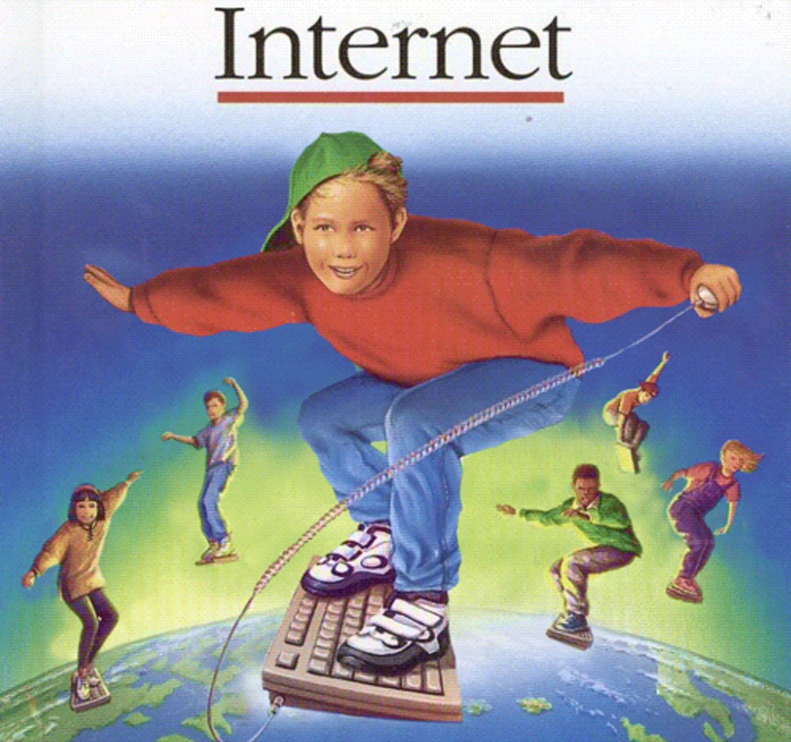

If you of a certain age, you may remember the internet of the early
2000s. For us... it was the information superhighway..." A little
bit about the early 2000s internet. First, we had excellent design
tastes. Bold text on top of... noisy backgrounds. We understood
animation. This is actually a "professionally" built site for the
cult classic film, Space Jam. and what's that i hear? Oh yeah, 10
second audio loop of Hoobastank. What's that? And there's even a
Under Construction sign! Because we didn't do staging sites back
then, we coded our staging sites live!
Sites that non-professionals built... weren't exactly... different.
There's still table layouts. There's still some interesting color
choices. There are banners and badges. And a web counter! (which by
the way, is disabled because the service was down.) And what's that?
You don't hear it... 2 minute Chrono Trigger music midi file playing
in the background. And there's even a Under Construction text! Early
2000s web developers don't need so stinkin' staging sites. We were
coding live! This is a fan site dedicated to the game NetMonster.
We'll come back to this site.
Picture of netmonster stuff (show the website + monsters pop in one by
one)
The thing I want to point out is this guy here -- this is a badge.
Because hidden on this web page is a NetMonster. NetMonsters was a
browser-based game from 1999-2003, where you are a member of the
Resistance Corps out to collect monsters and stop Shade and his evil
Minions from destroying websites, clogging up Phone Lines, and
generaally making the Internet an unpleasant place to surf. Internet
Monster Hunting at it's finest!
The player would download the NetMonster client, grab a URL with the
special NetMonster code on it, and the client would generate a
monster that you keep. 1 monster, 1 web Page.
A hard drive crash is why the project never went passed 1.4,
released in MONTH 1999. (SOURCE?) Even though it's been abandoned
for more than 15 years... you can still run the NetMonster code
today! It was written in .net, and works on Windows 10 machines!
So in order to talk hypothetically about lost code, I want to
present a analog to NetMonster, the game that inspired it... Monster
Rancher.
Screenshot of the CD table data.
The way Monster Rancher worked was that you would insert a CD, and
based on the TOC data would determine what kind of monster was
generated. It would go through a bunch of conditionals, decide the
type of monster, the variant, and some other attributes.
Explain Monster Rancher as well as the gimmick - If you put a Pearl
Jam CD in, you can get a Jam related monster. Or the Harry Potter
DVD, and you can get a Owl monster. It was also an excuse
about why you own a Smashmouth CD. No seriously what I'm not... I
own the CD because of the sweet monster you get. It Doesn't make
sense not to live for fun. [REFERENCE]
For Netmonster, rather than CDs... it was URLs. Similar process. It
looked at the URL is the primary generation method. It is possible
to override the generation using the tags in the image field to give
a custom name, class, image, and to select a Race/Element combo:
[ROBERT CARLSON REFERENCE and screenshot] That would give you all
sorts of stats and types.

Internet: A First Discovery Book (First Discovery Books)
Today, we cluster around massive community sites like Reddit,
Facebook, Instagram or specialized Wikis or forums. But in 2000, The
internet wasn't tethered to you, no... you would make a ritual to
purposely visit the internet. (dial tone) You were a navigator,
explorer, a safari... person... who traversed this internet wild
west of personal websites without the help of Google to take us
around. And the ambitious techie types would claim a piece of the
internet for themselves.
Collecting Monsters was a huge part of NetMonster. How NetMonster
players were -- hoarding URLS and having secret trades in seedy
backalley IRC rooms. How this was all researched was through a
handful of fan sites and a massive digging through the Wayback
Machine, through Geocities Archives, and Datahoarder torrents.
Little Internet Worlds that are forever hidden in internet archives.
With NetMonster, people started creating little worlds and
communities. Remember, 1 URL == 1 monster. And so these worlds could
be one of content and stories, or one that just had a single button
on a URL.
Kamek's Kastle... April Fools.. Lots of KKKK stuff. And as a person
of color, a little bit too much repetitiove Ks for my comfort level.
He had comics. He had game tips.
He had a guestbook and message board.
Keda -- Yo I'm Keda & I'm here to say, NetMonster is the coolest way
to play. Watch out B-rabbit. Kragok's NetMOnster Site: Look at that
meta description! 'thingy to come here and appreciate my stuff.
Thank You
His email prince vegetai
has attitude
mp4
typos
I have to put on my Indiana Jones hat to really dig into the pieces
available. We live with this believe that "you can't truly delete
anything from the Internet?", which we are finding is no longer
true. Companies come and go, and when they go, so does your data.
For example: JSX NetMOnster Cavern of Doom. He had "cages". Lost interst...
Joe, who was endlessly waiting for NetMonster 2 before he updated
his site. He has a save the rainforest badge. Then around 2004 (Way
back machine says Aug 2004)... Joe's site was taken by malware and
redirected to some other domain. His site gone.
Some sites were just lost or pages were missing or broken. Like
Powerpuffca, whose site was mostly filled with what could be the
most beautiful NetMonster images.
But we'll never know. Because visiting the archive shows us fifteen 404 errors for images.
What are you 'filename', and what
visual attraction did you hold?
I could have spent 100 of hours digging through the past and finding
more threads of a bygone era. And the thing is - I'm not even a fan
of this game! NetMonsters was awful! Battling was random and the
monsters were ugly! But it was a random thought about a random game
that I played a week of in 1999. And the sadness that the modern
internet didn't have much about it... The interent is incredibly
fragile. The Wayback machine was lucky enough to exist. Else this
whole world would have been lost forever. "
Thank you:
*
http://www.geocities.ws/ryokazamaccc2/belldandy.html
* Netmonster guy 1
* Netmonster blog 2
* Geocities archives
*